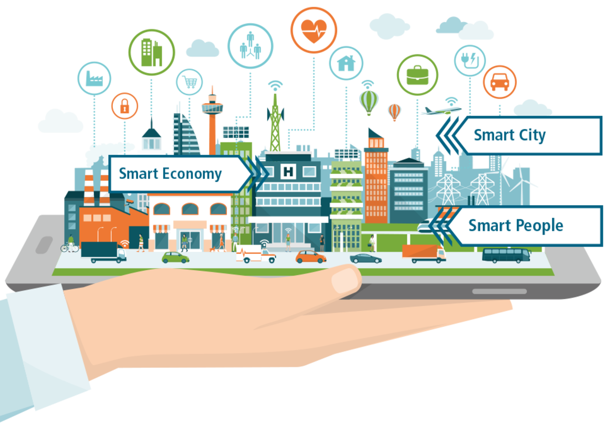

SMART CITY
A smart city is a municipality that uses information and communication technologies (ICT) to increase operational efficiency, share information with the public and improve both the quality of government services and citizen welfare.
While the exact definition varies, the overarching mission of a smart city is to optimize city functions and drive economic growth while improving quality of life for its citizens using smart technology and data analysis. Value is given to the smart city based on what they choose to do with the technology, not just how much technology they may have.
Several major characteristics are used to determine a city's smartness. These characteristics include:
- a technology-based infrastructure
- environmental initiatives
- a high functioning public transportation system
- a confident sense of urban planning
- humans to live and work within the city and utilize its resources.
A smart city's success depends on its ability to form a strong relationship between the government -- including its bureaucracy and regulations -- and the private sector. This relationship is necessary because most of the work that is done to create and maintain a digital, data-driven environment occurs outside of the government. Surveillance equipment for busy streets could include sensors from one company, cameras from another and a server from yet another.
Technology in Smart City
.png)
Smart cities use a combination of the internet of things (IoT) devices, software solutions, user interfaces (UI) and communication networks. However, they rely first and foremost on the IoT. The IoT is a network of connected devices -- such as vehicles, sensors or home appliances -- that can communicate and exchange data. Data collected and delivered by the IoT sensors and devices is stored in the cloud or on servers. The connection of these devices and use of data analytics (DA) facilitates the convergence of the physical and digital city elements, thus improving both public and private sector efficiency, enabling economic benefits and improving citizen's lives.
The IoT devices sometimes have processing capabilities called edge computing. Edge computing ensures that only the most important and relevant information is communicated over the communication network.
A firewall security system is also necessary for the protection, monitoring and control of network traffic within a computing system. Firewalls ensure that the data constantly being transmitted within a smart city network is secure by preventing any unauthorized access to the IoT network or city data.
Features of a smart city
Emerging trends such as automation, machine learning and the IoT are driving smart city adoption.
.png)
Theoretically, any area of city management can be incorporated into a smart city initiative. A classic example is the smart parking meter that uses an application to help drivers find available parking spaces without prolonged circling of crowded city blocks. The smart meter also enables digital payment, so there's no risk of coming up short of coins for the meter.
Also in the transportation arena, smart traffic management is used to monitor and analyze traffic flows in order to optimize streetlights and prevent roadways from becoming too congested based on time of day or rush-hour schedules. Smart public transit is another facet of smart cities. Smart transit companies are able to coordinate services and fulfill riders' needs in real time, improving efficiency and rider satisfaction. Ride-sharing and bike-sharing are also common services in a smart city.
Energy conservation and efficiency are major focuses of smart cities. Using smart sensors, smart streetlights dim when there aren't cars or pedestrians on the roadways. Smart grid technology can be used to improve operations, maintenance and planning, and to supply power on demand and monitor energy outages.
Smart buildings are also often part of a smart city project. Legacy infrastructure can be retrofitted and new buildings constructed with sensors to not only provide real time space management and ensure public safety, but also to monitor the structural health of buildings. Sensors can detect wear and tear, and notify officials when repairs are needed. Citizens can help in this matter, notifying officials through a smart city application when repairs are needed in buildings and other public infrastructure, such as potholes. Sensors can also be used to detect leaks in water mains and other pipe systems, helping reduce costs and improve the efficiency of public workers
Smart city technologies also bring efficiencies to urban manufacturing and urban farming, including job creation, energy efficiency, space management and fresher goods for consumers.
How a smart city works
Smart cities utilize their web of connected IoT devices and other technologies to achieve their goals of improving the quality of life and achieving economic growth. Successful smart cities follow four steps:
.png)
- Collection - Smart sensors throughout the city gather data in real time.
- Analysis - Data collected by the smart sensors is assessed in order to draw meaningful insights.
- Communication - The insights that have been found in the analysis phase are communicated with decision makers through strong communication networks.
- Action - Cities use the insights pulled from the data to create solutions, optimize operations and asset management and improve the quality of life for residents.
Fostering sustainability with smart cities
Sustainability is another major facet of smart cities. Urbanization is expected to increase even more in the coming years. The United Nations reports that around 55% of the world's population currently resides in an urban area or city; this figure is set to rise 68% throughout the coming decades. Smart technology will help cities sustain growth and improve efficiency for citizen welfare and government efficiency in urban areas in the years to come.
While cities already present environmental advantages, such as smaller geographic footprints that impact fewer ecological systems, they also negatively impact the environment with emissions, such as their extreme usage of fossil fuels. The network of smart city technologies could alleviate these detrimental effects.
The number of cars used in cities is also expected to decrease as municipalities become smarter. Autonomous vehicles, or self-driving cars, could potentially change a population's perspective on the necessity of owning cars. It is suspected that the adoption of autonomous vehicles will reduce the amount of vehicles owned by civilians, thus decreasing the number of cars on the street and further lowering the emission of detrimental gases.
Smart city challenges and concerns
.png)
Smart city initiatives must include the people they aims to help: residents, business people and visitors. City leaders must not only raise awareness of the benefits of the smart city technologies being implemented, but also promote the use of open, democratized data to its citizens. If people know what they are participating in and the benefits it can bring, they are more likely to engage.
Fostering collaboration between the public and private sector and city residents is key to creating a smart citizen who will be engaged and empowered to positively contribute to the city and community. Smart city projects should include plans to make the data transparent and available to citizens, often through an open data portal or mobile app. This enables residents to engage with the data and understand what it is used for. Through a smart city app, residents may also be able to complete personal chores, such as viewing their home's energy consumption, paying bills and finding efficient public transportation.
However, perhaps the biggest challenge smart cities face is the problem of connectivity. The thousands or millions of IoT devices scattered across the city would be defunct without a solid connection and the smart city itself would be dead.
Additionally, smart cities that are being created from the ground up -- like Saudi Arabia's Neom and Arizona's Buckeye which are being built in the desert -- lack an established population and are therefore presented with the obstacle of having to recruit residents. These future smart cities also have no past success to provide confidence. As Neom and Buckeye have been built, concerns have risen over whether or not there is even a sustainable water source available.
Why we need smart cities
The primary goal of a smart city is to create an urban environment that yields a high quality of life to its residents while also generating overall economic growth. Therefore, a major advantage of smart cities is their ability to facilitate an increased delivery of services to citizens with less infrastructure and cost.
.png)
The primary goal of a smart city is to create an urban environment that yields a high quality of life to its residents while also generating overall economic growth. Therefore, a major advantage of smart cities is their ability to facilitate an increased delivery of services to citizens with less infrastructure and cost.
Smart city applications enable cities to find and create new value from their existing infrastructure. The improvements facilitate new revenue streams and operational efficiencies, helping governments and citizens save money.
Examples of smart cities
.png)
- Kansas City, Missouri
- San Diego, California
- Columbus, Ohio
- New York City, New York
- New York City, New York
- London, England
- Dubai, United Arab Emirates
- Melbourne, Australia
- Barcelona, Spain
- Reykjavik, Iceland
- Hong Kong, China
While many cities across the world have started implementing smart technologies, a few stand out as the furthest ahead in development. These cities include:
Most of the new smart city projects are concentrated in the Middle East and China, but in 2018, Reykjavik and Toronto were listed alongside Tokyo and Singapore as some of the world's smartest cities
The smart city initiative of Kansas City, Mo., involves smart streetlights, interactive kiosks and more than 50 blocks of free public Wi-Fi along the city's two-mile streetcar route. Available parking spaces, traffic flow and pedestrian hotspots are all publicly available through the city's data visualization app.
In Dubai, United Arab Emirates, smart city technology is used for traffic routing, parking, infrastructure planning and transportation. The city also uses telemedicine and smart healthcare, as well as smart buildings, smart utilities, smart education and smart tourism.
The Barcelona, Spain, smart transportation system and smart bus systems are complemented by smart bus stops that provide free Wi-Fi, USB charging stations and bus schedule updates for riders. A bike-sharing program and smart parking app that includes online payment options are also available. The city also uses sensors to monitor temperature, pollution and noise, as well as monitor humidity and rain levels.